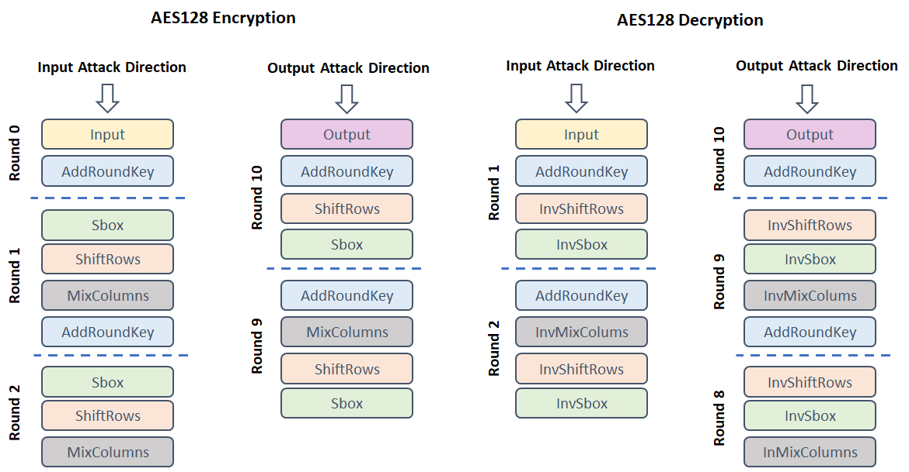

Leakage Models
AISY Framework v0.1 only has support for AES128 leakage models. Future releases will include leakage models support for additional ciphers.
Definiting Leakage Models
In the main script, the user needs to call the method set_aes_leakage_model() and pass AES leakage model attributes.
The attributes are:
leakage_model:Hamming weight ("HW"), Hamming distance ("HD"), Identity ("ID") or "bit".bit:index of the target bit in a byte (thebyteattribute also has to be defined if bit model is set).byte:index of the target byte in a AES state.round:index of the target round in AES.round_first:index of the first target round in AES when Hamming distance is set as leakage model.round_second:index of the second target round in AES when Hamming distance is set as leakage model. Intermediates obtained from round_first and round_second are XORed.target_state:string specifying the target AES state. Supported values are: 'Input', 'Output', 'Sbox', InvSbox', 'AddRoundKey', 'MixColumns', 'InvMixColumns', 'ShiftRows' and 'InvShiftRows'.target_state_first:string specifying the first target AES state when Hamming distance is set as leakage model. Supported values are: 'Input', 'Output', 'Sbox', InvSbox', 'AddRoundKey', 'MixColumns', 'InvMixColumns', 'ShiftRows' and 'InvShiftRows'.target_state_second:string specifying the second target AES state when Hamming distance is set as leakage model. Supported values are: 'Input', 'Output', 'Sbox', InvSbox', 'AddRoundKey', 'MixColumns', 'InvMixColumns', 'ShiftRows' and 'InvShiftRows'.direction:string defining the AES direction. Supported values are "Encryption" and "Decryption".attack_direction:string defining the attack direction to create the leakage models. Supported values are "input" and "output", both lowercase.
Supported AES States for Leakage Models
Figure below illustrates the AES states that the user can target in leakage model definitions.

Default Values
The framework set the following as default ones:
leakage_model = {
"leakage_model": "HW",
"bit": 0,
"byte": 0,
"round": 1,
"round_first": 1, # for Hamming Distance
"round_second": 1, # for Hamming Distance
"cipher": "AES128",
"target_state": "Sbox",
"target_state_first": "Sbox", # for Hamming Distance
"target_state_second": "Sbox", # for Hamming Distance
"direction": "Encryption",
"attack_direction": "input"
}
If the default values are the same as the user needs to select, the set_aes_leakage_model() method does not need to be set in the main script.
Examples
Hamming weight model, S-Box Output Round 1, AES Encryption
from aisy.sca_aisy_aes import AisyAes
aisy = AisyAes()
aisy.set_aes_leakage_model(leakage_model="HW", byte=0, target_state="Sbox", direction="Encryption",
cipher="AES128")
Hamming weight model, S-Box Input Round 10, AES Encryption
from aisy.sca_aisy_aes import AisyAes
aisy = AisyAes()
aisy.set_aes_leakage_model(leakage_model="HW", byte=0, target_state="Sbox", round=10,
attack_direction="output", direction="Encryption", cipher="AES128")
Identity model, S-Box Output Round 1, AES Encryption
from aisy.sca_aisy_aes import AisyAes
aisy = AisyAes()
aisy.set_aes_leakage_model(leakage_model="ID", byte=0, target_state="Sbox", direction="Encryption",
cipher="AES128")
Bit 3, Byte 5, S-Box Output Round 1, AES Encryption
from aisy.sca_aisy_aes import AisyAes
aisy = AisyAes()
aisy.set_aes_leakage_model(leakage_model="bit", bit=3, byte=5, target_state="Sbox",
direction="Encryption", cipher="AES128")
Hamming distance between S-Box Input in round 10 and output (ciphertext), AES Encryption, byte 0
from aisy.sca_aisy_aes import AisyAes
aisy = AisyAes()
aisy.set_aes_leakage_model(leakage_model="HD", byte=0, direction="Encryption", cipher="AES128",
target_state_first="Output", round_first=10,
target_state_second="Sbox", round_second=10,
attack_direction="output")